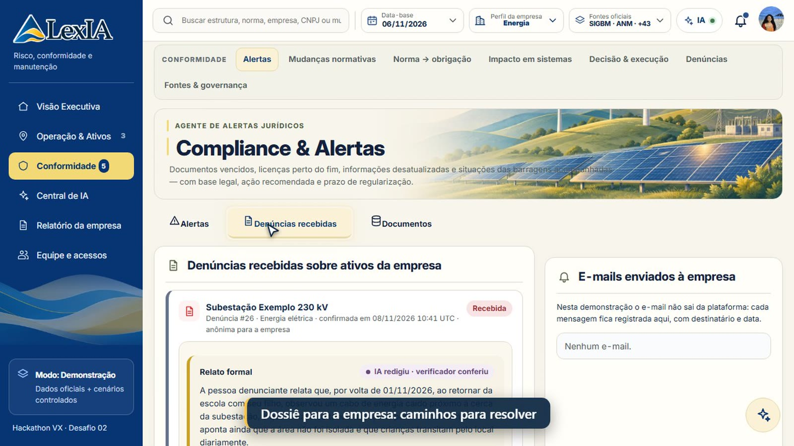
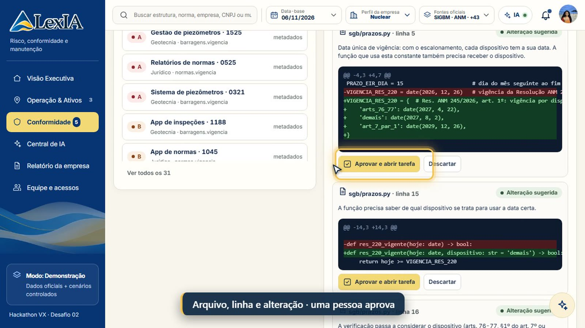

Uma única resolução pode valer em três datas diferentes, conforme o artigo. Some dezenas de normas, várias frentes de operação e milhares de sistemas. Do outro lado, a denúncia chega desorganizada, sem norma, sem responsável e sem caminho para resolver. O resultado é retrabalho, prazo perdido e multa.
O que a LexIA oferece
Mudança por dispositivo
Vigência calculada artigo por artigo, na data que o usuário escolher.
Radares com dados oficiais
Barragens, minas, fechamento, usinas, outorgas, abastecimento e locais radiológicos.
Alerta para a pessoa certa
Base legal, prazo e responsável por papel; escalado quando o papel está vazio.
Denúncia que vira dossiê
Com conta ou anônima. Relato formal, normas, faixa de multa e checklist de caminhos para a empresa.
Triagem entre áreas
Não é da sua área? Um clique repassa para a função certa, com aviso e trilha.
Norma → sistema → código
Obrigações extraídas do texto e impacto no portfólio até o arquivo e a linha.
Equipe e acessos
Convite por e-mail ou planilha, checklist por módulo e revogação imediata.
Prova e auditoria
Decisão humana registrada, evidência com hash e relatório da empresa em PDF.
Cidadão e Transparência
Linguagem simples, mapa da região e quantas denúncias foram respondidas.
Dados oficiais reais, quatro frentes no mesmo núcleo
902barragens de mineração (ANM/SIGBM)
18.899títulos de lavra (ANM/SIGMINE)
7.937barragens sem dono identificado (ANA/SNISB)
25.046usinas (ANEEL/SIGA) e 175 reservatórios (ONS)
45fontes normativas catalogadas e monitoradas
Mineração, energia, saneamento e nuclear usam o mesmo motor: muda só a configuração (ativos, normas e papéis). As empresas, os ativos e o portfólio de sistemas da demonstração são fictícios e sinalizados em cada tela; os dados públicos acima são reais, com data e hash.

A denúncia chega à empresa como dossiê, com relato formal

A norma muda: arquivo, linha e alteração de código, com aprovação humana
LexIA · visão geral1 / 2
Onde a IA está — e onde não estáA IA só entra onde muda o resultado, sempre com um verificador atrás
✦ A IA entra aqui
Denúncia: entende a história do cidadão e redige o relato formal. O verificador recusa número, data ou nome que não esteja no relato.
Perguntas sobre normas: responde só com citação; sem base, diz que não sabe.
Linguagem por perfil: simples para o cidadão, técnica para o jurídico, com as mesmas fontes e a mesma certeza.
Norma → obrigação: propõe obrigações presas ao trecho literal; uma pessoa confirma.
Código: sugere pontos afetados, aceitos só se o trecho existir no arquivo.
Filtro em português: "inativas sem projeto em MG" vira filtro conferível.
⚙ Aqui é regra versionada
Vigência por dispositivo e datas de cada artigo.
Radares de risco e níveis de atenção sobre os dados oficiais.
Quais normas se aplicam ao setor e ao tipo de ativo.
Faixas de multa: texto legal, com fonte e nível de verificação.
Roteamento de alertas, triagem, permissões e checklist do dossiê.
Cruzamento do portfólio de sistemas e diffs dos detectores.
A IA propõe · regras verificam · uma pessoa decide
Medido, barato e confiável
60–83%das consultas resolvidas sem IA paga (regras e cache)
≈ R$ 0,02por consulta, com teto diário de chamadas
65 / 65casos da avaliação da IA, aberta na plataforma
314testes automáticos passando
mspara cruzar 2.140 aplicações com uma mudança de norma
AWS só onde agrega valor
Amazon Bedrock
A IA generativa roda na conta do cliente, sem os documentos saírem da empresa.
S3 com Object Lock
Cofre de provas: o que foi decidido e quando não pode ser alterado.
Amazon SES
Leva a denúncia e o convite à pessoa certa, com registro.
Na demonstração, a IA generativa usa o Google Gemini, e o caminho AWS já está no código e liga por configuração. Sem nenhuma chave, a plataforma funciona inteira em modo controlado.
Escala por configuração
Novo setor entra com ativos, normas e papéis, sem projeto novo.
Portfólio grande: o cruzamento é por domínio regulatório; 2 mil ou 20 mil aplicações levam o mesmo tempo.
Pessoas: cada empresa e cada frente com acesso por módulo.
Custo: cresce devagar, porque a IA só entra onde precisa.
Mercado e modelo
301 empresas com barragem na ANM; 89 contas atendíveis em mineração (cenário-base).
Mercado B2B de cerca de R$ 28 milhões/ano nas quatro frentes (cenário do estudo).
Assinatura de R$ 36 a 60 mil/ano; equilíbrio com 13 clientes.
Entrada por piloto de 30 dias com mineradoras médias.
Como testar
Rodar em 2 minutos
Python 3.10+ · python -m app.server
Abrir http://localhost:8765
Entrar pelo cartão Acesso rápido · senha LexIA2026demo
Vídeo de 3 min 48 s
Mostra cada área e onde clicar: docs/video/LexIA_demo.mp4. O passo a passo completo está no README, na seção COMO TESTAR A PLATAFORMA.
LexIA · avaliação preliminar, não é parecer jurídico nem certificação2 / 2